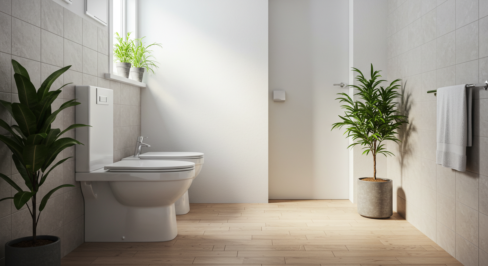
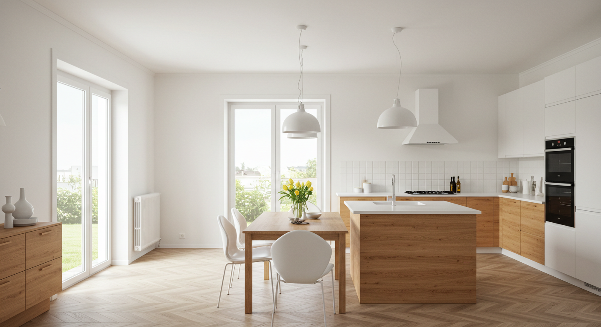
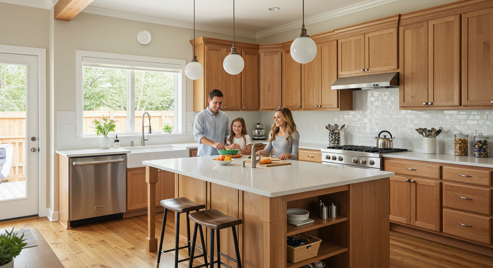
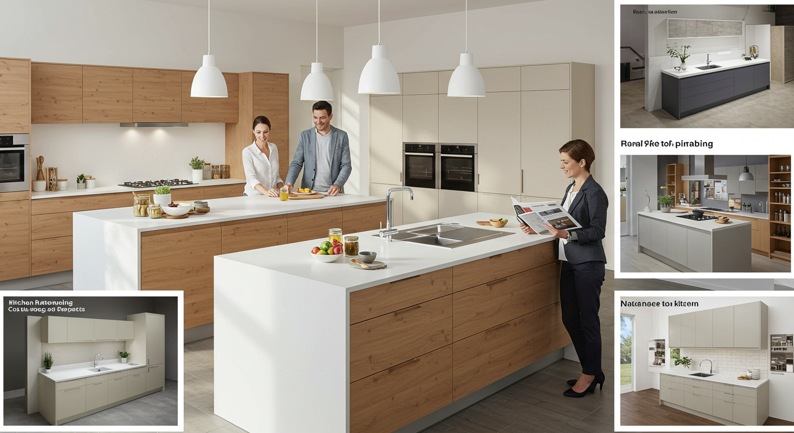
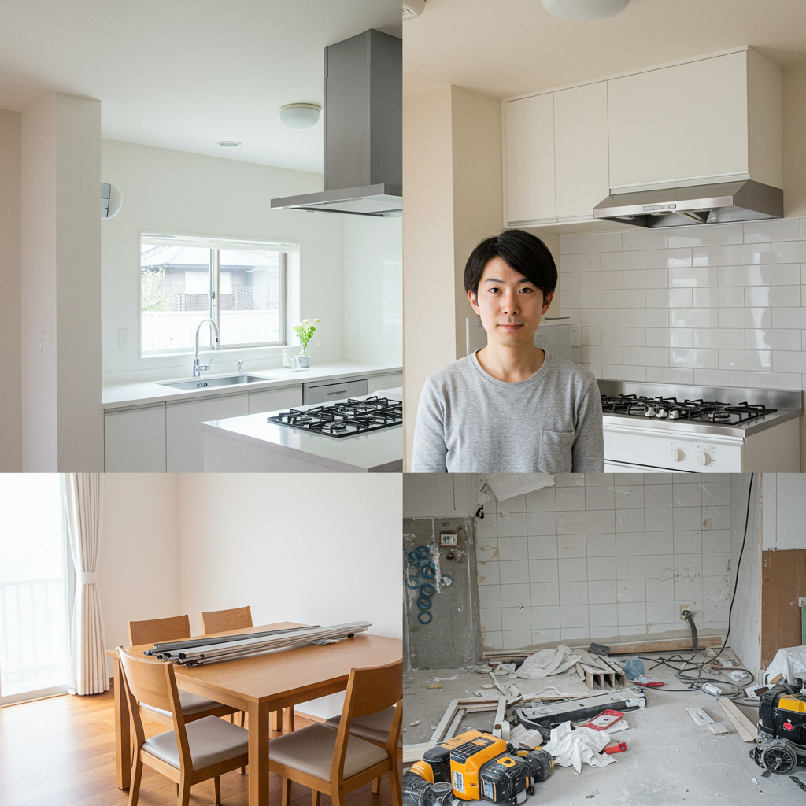
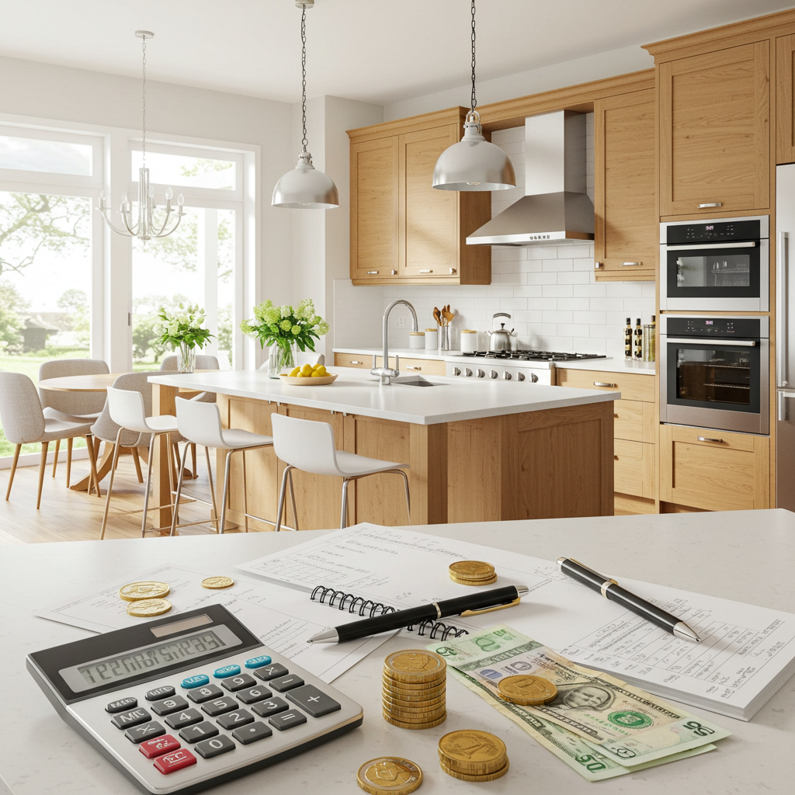
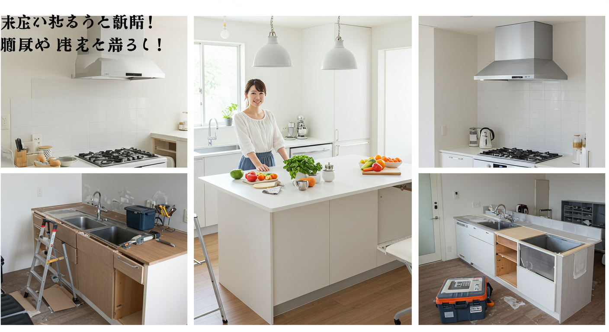
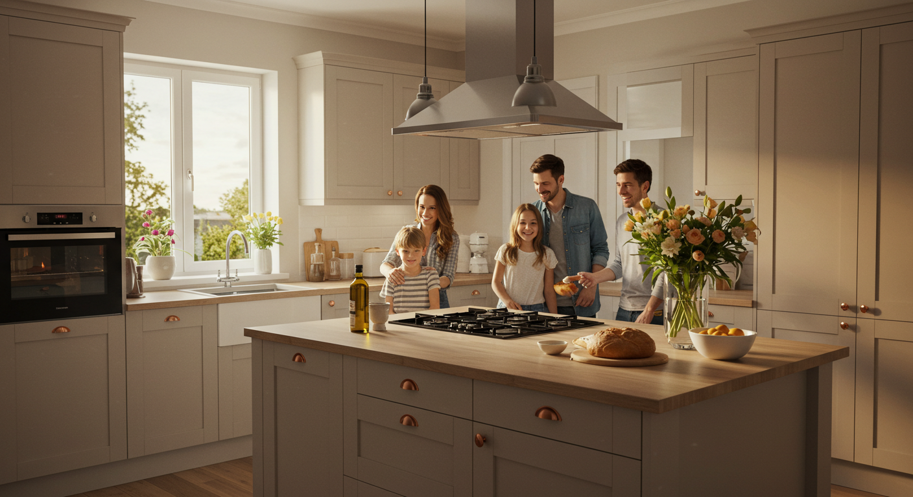

後悔しないキッチンリフォーム！費用相場と成功のポイントを徹底解説

導入

キッチンは、私たちの暮らしの中心にある大切な場所です。毎日使う場所だからこそ、「もっとこうだったらいいのに」と感じる瞬間も多いのではないでしょうか。
「収納が少なくて、物があふれてしまう…」
「作業スペースが狭くて、料理がしづらい…」
「子どもたちの様子を見ながら料理ができたら安心なのに…」
「デザインが古くて、キッチンに立つのが少し憂鬱…」
そんなお悩みを抱えながら、キッチンリフォームを考え始めたあなたへ。この記事は、後悔しない理想のキッチンを実現するための、いわば「羅針盤」のような存在になることを目指して書かれています。
キッチンリフォームは、決して安い買い物ではありません。だからこそ、思い描いていた理想と現実が違ったり、思わぬ予算オーバーで頭を悩ませたりといった失敗は絶対に避けたいものです。しかし、どこから手をつけていいのか、何に気をつければいいのか、分からないことだらけで不安に感じている方も少なくないでしょう。
ご安心ください。この記事では、キッチンリフォームがもたらす素晴らしいメリットから、理想を叶えるための具体的なキッチンの選び方、知っておくべきデメリットとその対策、そして最も気になる費用相場や予算を抑えるコツまで、一つひとつ丁寧に、そして分かりやすく解説していきます。さらに、リフォームの計画から完成までの流れや、信頼できるパートナーとなるリフォーム会社の選び方まで、あなたが知りたい情報を網羅しました。
この記事を読み終える頃には、漠然としていた「理想のキッチン」の輪郭がはっきりと見え、リフォームへの不安が期待へと変わっているはずです。キッチンは単に食事を作る場所ではありません。家族の笑顔が生まれ、会話が弾み、日々の暮らしを豊かに彩るステージです。
さあ、私たちと一緒に、あなたとご家族にとって最高のキッチンづくりの旅を始めましょう。あなたの毎日がもっと楽しく、もっと快適になる、その第一歩がここにあります。
キッチンリフォームのメリット

「キッチンリフォーム」と聞くと、単に古くなった設備を新しくすること、と考える方もいらっしゃるかもしれません。しかし、その本質はもっと奥深く、私たちの暮らしそのものを豊かに変える大きな可能性を秘めています。ここでは、リフォームによって得られる３つの大きなメリットについて、詳しく見ていきましょう。
メリット１．家事の時短と効率アップ
毎日の食事作りは、献立を考え、食材を準備し、調理し、そして後片付けをするという一連の流れから成り立っています。このプロセスの中に潜む「ちょっとした不便」が積み重なると、大きな時間的・精神的な負担になりがちです。キッチンリフォームは、こうした日々の小さなストレスを解消し、家事の劇的な効率化を実現してくれます。
最新設備による調理時間の短縮
まず考えられるのが、調理器具の進化です。例えば、最新のガスコンロやIHクッキングヒーターには、驚くほど便利な機能が搭載されています。複数のコンロを同時に使っても火力を自動で調整してくれる機能、設定した温度をキープしてくれる揚げ物機能、タイマーをセットすれば自動で火が消える機能など、一昔前のコンロとは比べ物になりません。これにより、「うっかり目を離して焦がしてしまった」という失敗が減り、他の作業と並行して効率よく調理を進めることができます。
また、ビルトインタイプのコンベクションオーブンやスチームオーブンを導入すれば、料理のレパートリーが広がるだけでなく、火加減の難しい煮込み料理や焼き物も、ボタン一つで本格的な仕上がりになります。これまで手間がかかると敬遠していた料理にも、気軽に挑戦できるようになるでしょう。
考え抜かれた収納による「探す時間」の削減
「あれ、あのスパイスはどこに置いたかな？」「このお鍋を取り出すのに、手前の物を全部どかさないと…」こんな経験はありませんか？ 物が溢れ、整理されていないキッチンでは、調理を始める前にまず「物を探す」という余計な時間が発生してしまいます。
最新のシステムキッチンは、収納力が格段に向上しています。デッドスペースになりがちだった足元のスペースも、引き出し式のフロアコンテナにすることで、重い鍋やフライパン、調味料のボトルなどを一目で確認し、スムーズに取り出すことができます。吊戸棚には、ボタン一つで棚が目の前の高さまで降りてくる昇降式の収納（ダウンウォール）もあり、背の低い方でも奥の物まで楽に出し入れが可能です。
リフォームを機に、どこに何を収納するかを改めて計画し直すことで、物の定位置が決まります。これにより、調理中に必要なものを探して動き回る無駄がなくなり、一連の動作が驚くほどスムーズになります。これは、単に時間が短縮されるだけでなく、「探し物が見つからない」という小さなイライラから解放されるという、精神的なメリットも非常に大きいのです。
後片付けを劇的に楽にする設備と素材
食事作りの中で、最も面倒に感じるのが後片付け、という方も多いのではないでしょうか。キッチンリフォームは、この後片付けの負担を大幅に軽減してくれます。
その代表格が、ビルトイン食洗機です。手洗いの場合、食器を洗い、すすぎ、拭いて、食器棚に戻すという一連の作業には、意外と時間がかかります。食洗機があれば、汚れた食器をセットしてボタンを押すだけ。高温で洗浄・乾燥させるため衛生的ですし、手洗いに比べて節水効果も期待できます。家族との食後の団らんの時間や、自分のためのリラックスタイムを、食洗機が生み出してくれるのです。
また、キッチン自体の素材選びも重要です。油汚れが付きにくく、サッと拭くだけで綺麗になるレンジフード、水垢が残りにくいシンク、汚れが染み込みにくいワークトップ（天板）などを選ぶことで、毎日のお手入れが格段に楽になります。例えば、継ぎ目のない一体成型のシンクや、撥水・撥油コーティングが施された素材を選ぶだけで、ゴシゴシと力を入れて掃除する必要がなくなります。
このように、キッチンリフォームは調理から後片付けまで、家事のあらゆる場面で時間と労力を削減してくれます。その結果生まれた余裕は、家族と過ごす時間、趣味の時間、あるいは単にゆっくりと休む時間として、あなたの暮らしをより一層豊かなものにしてくれるでしょう。
メリット２．家族とのコミュニケーション円滑化
かつての日本の住宅では、「キッチンは奥まった場所にある独立した空間」という間取りが一般的でした。料理をする人は壁に向かって一人黙々と作業をし、リビングやダイニングにいる家族との間には、物理的にも心理的にも壁がありました。しかし、キッチンリフォームによって、この状況を劇的に変えることができます。キッチンが、家族のコミュニケーションを育む中心的な場所へと生まれ変わるのです。
対面式キッチンがもたらす「つながり」
この変化の主役となるのが、「対面式キッチン（オープンキッチン）」です。リビングやダイニングと一体化した対面式キッチンは、料理をする人が家族のいる空間に顔を向けることができるレイアウトです。これにより、生まれるメリットは計り知れません。
例えば、小さなお子様がいるご家庭。これまでは、お子様をリビングで一人で遊ばせておくことに不安を感じながら、急いで料理をしていたかもしれません。対面式キッチンなら、料理をしながらでも常にリビングにいるお子様の様子に目を配ることができます。「危ないことをしていないかな？」という心配が軽減され、安心して家事に集中できます。また、お子様の方からもお母さんやお父さんの顔が見えるため、寂しさを感じにくくなります。キッチンカウンター越しに「今日、幼稚園でこんなことがあったんだよ」と話しかけてくるお子様と、笑顔で会話を交わしながら夕食の準備をする。そんな温かい日常が当たり前になります。
学齢期のお子様がいるご家庭では、ダイニングテーブルやリビングで宿題をするお子様の様子を見守ることができます。分からない問題を質問された時に、すぐに手を止めて教えてあげることも可能です。キッチンが「勉強を見守る司令塔」のような役割を果たすことで、親子のコミュニケーションがより密になります。
家族や友人と「一緒に楽しむ」キッチンへ
対面式キッチンの魅力は、子育て世代だけに限りません。キッチンがリビングと一体化することで、家族が自然とキッチン周りに集まるようになります。例えば、ご主人がリビングでテレビを見ながら、カウンター越しに料理中の奥様と今日の出来事について話す。あるいは、お子様が学校から帰ってきて、おやつを食べながらカウンターで宿題をする。キッチンが単なる作業場ではなく、家族の「たまり場」のような存在になるのです。
さらに、アイランドキッチンのように、キッチンの周りをぐるりと囲めるレイアウトにすれば、家族みんなで料理を楽しむ機会も増えるでしょう。週末には、お子様が野菜を洗ったり、簡単な盛り付けを手伝ったり。ご夫婦で一緒に料理をしたり、ホームパーティーで友人を招いて、みんなでワイワイと料理を囲んだり。キッチンがコミュニケーションのハブとなることで、食事の準備そのものが楽しいイベントに変わります。
このように、キッチンリフォームは、間取りの変更を通じて家族のつながりを深めるきっかけを作ってくれます。これまで孤立しがちだった家事の時間が、家族の笑顔と会話に満ちた、かけがえのないコミュニケーションの時間へと変わるのです。これは、新しい設備を手に入れること以上に、価値のあるメリットと言えるでしょう。
メリット３．デザイン性と快適性の向上
キッチンは毎日立つ場所だからこそ、その空間が心地よく、自分のお気に入りのデザインであることは、日々のモチベーションに大きく影響します。キッチンリフォームは、機能性を追求するだけでなく、あなたの「好き」を詰め込んだ、心から安らげる快適な空間を実現する絶好の機会です。
理想の空間を創り出すデザインの自由度
システムキッチンは、扉の色や素材、ワークトップ（天板）の種類、取っ手のデザインなど、組み合わせられるパーツが非常に豊富です。これにより、まるでオーダーメイドのように、自分の理想とするテイストのキッチンを創り上げることが可能になります。
例えば、温かみのある無垢材の扉と白いタイルを組み合わせて、ナチュラルで可愛らしい「カフェ風」のキッチン。光沢のあるモノトーンの扉とステンレスのワークトップで、洗練された「モダン」なキッチン。あるいは、落ち着いた色味の木目調とアイアンの取っ手で、インダストリアルな雰囲気の「男前」キッチン。あなたの思い描くイメージを、リフォーム会社の担当者やインテリアコーディネーターに伝えることで、具体的な形にしていくことができます。
デザインはキッチン本体だけに留まりません。リフォームを機に、キッチンスペース全体のトータルコーディネートを考えてみましょう。壁紙（クロス）を一面だけアクセントカラーに変えたり、汚れに強くデザイン性の高いキッチンパネルを選んだり。床材を、水や油に強く掃除がしやすいクッションフロアやフロアタイルに張り替えるだけでも、空間の印象はガラリと変わります。
さらに、照明計画も重要な要素です。手元を明るく照らす機能的なダウンライトやスポットライトに加え、ダイニングスペースには温かみのある光のペンダントライトを吊るすことで、空間にリズムと奥行きが生まれます。お気に入りのデザインのキッチンで、美しい照明に照らされながら料理をする時間は、日々の家事を特別なひとときへと変えてくれるでしょう。
身体的な負担を軽減する快適性
キッチンの快適性は、デザインだけではありません。使う人の身体に合わせた設計にすることで、日々の作業が格段に楽になります。
その代表が「キッチンの高さ」です。一昔前のキッチンは高さが画一的でしたが、現在のシステムキッチンは、使う人の身長に合わせて高さを選ぶことができます。一般的に、適切なキッチンの高さの目安は「身長 ÷ 2 + 5cm」と言われています。高さが合わないキッチンで作業を続けると、不自然な前屈み姿勢になり、腰痛や肩こりの原因になることがあります。自分にぴったりの高さのキッチンを選ぶことで、長時間の作業でも身体的な負担が大幅に軽減されます。
また、夏場のキッチンは火を使うため、非常に暑くなりがちです。リフォームで断熱性の高い窓に変えたり、キッチンスペースに専用のエアコンやシーリングファンを設置したりすることで、夏の調理環境を劇的に改善できます。逆に、冬場は足元が冷えやすい場所でもあります。床暖房を導入すれば、寒い季節でも快適にキッチンに立つことができます。
さらに、コンセントの配置も快適性を左右する重要なポイントです。ミキサーやコーヒーメーカーなど、使いたい調理家電の場所に合わせてコンセントを増設することで、延長コードがごちゃごちゃと伸びるストレスから解放されます。
このように、キッチンリフォームは、見た目の美しさだけでなく、使う人の心と身体の快適性を追求することができます。自分だけのお気に入りの空間で、身体に負担なく、心地よく過ごせる。そんな理想のキッチンが手に入れば、毎日の料理の時間が、もっと楽しく、もっと創造的なものになることは間違いありません。
理想を叶えるキッチンの選び方

キッチンリフォームのメリットを理解したところで、次はいよいよ「自分にとっての理想のキッチン」を具体的に形にしていくステップです。しかし、選択肢が豊富なだけに、何から考えれば良いのか迷ってしまうかもしれません。ここでは、後悔しないキッチンを選ぶための３つの重要なポイント、「レイアウト」「素材と動線」「最新設備」について、詳しく解説していきます。
選び方１．キッチンのレイアウト
キッチンのレイアウトは、作業効率や家族とのコミュニケーションの取り方を大きく左右する、最も重要な要素です。それぞれのレイアウトには特徴があり、ご自宅の広さや間取り、ライフスタイルによって最適な形は異なります。代表的なレイアウトの種類と、そのメリット・デメリットを見ていきましょう。
1. I型キッチン
シンク、コンロ、調理スペースが一列に並んだ、最もシンプルで一般的なレイアウトです。
- メリット:
- 省スペースで設置できるため、比較的コンパクトなキッチンに向いています。
- 壁付けにすれば、リビングダイニングのスペースを広く確保できます。
- 構造がシンプルなため、他のレイアウトに比べて価格を抑えやすい傾向があります。
- デメリット:
- キッチンの横幅が長すぎると、シンクとコンロの間の移動距離が長くなり、作業効率が落ちることがあります。一般的に、快適に作業できる横幅は270cm程度までとされています。
- 複数人での作業にはあまり向いていません。
2. II型キッチン
シンクのあるカウンターと、コンロのあるカウンターを、平行に2列配置したレイアウトです。セパレートキッチンとも呼ばれます。
- メリット:
- 作業動線が短く、体の向きを変えるだけでシンクとコンロの間を移動できるため、作業効率が非常に高いです。
- 収納スペースを豊富に確保できます。
- 複数人での作業がしやすく、家族で一緒に料理を楽しむのに向いています。
- デメリット:
- シンクで洗った野菜などをコンロに運ぶ際に、床に水が垂れやすいという点に注意が必要です。
- 設置にはある程度の幅（通路幅として90cm～120cm程度）が必要になります。
3. L型キッチン
シンク、コンロ、調理スペースをL字型に配置したレイアウトです。
- メリット:
- I型に比べて作業動線が短く、効率的に作業ができます。
- コーナー部分を有効活用すれば、広い作業スペースや収納スペースを確保できます。
- 壁付けにすれば、中央にダイニングテーブルを置くなど、スペースを有効活用できます。
- デメリット:
- コーナー部分がデッドスペースになりがちです。コーナー専用の収納ユニットなどを活用する工夫が必要です。
- I型キッチンに比べて、設置に広いスペースが必要となり、価格も高くなる傾向があります。
4. U型キッチン（コの字型キッチン）
キッチンをU字型（コの字型）に囲むようにカウンターを配置したレイアウトです。
- メリット:
- 作業動線が最も短く、体の向きを変えるだけでほとんどの作業が完結するため、作業効率は抜群です。
- カウンターの面積が広く、作業スペースや収納スペースを最大限に確保できます。
- 料理に集中したい方や、本格的な料理を楽しむ方に最適なレイアウトです。
- デメリット:
- 設置にはかなりの広さが必要となり、リフォーム費用も高額になります。
- 出入り口が1箇所になるため、複数人での作業時には窮屈に感じることがあります。
- L型同様、2箇所のコーナー部分がデッドスペースになりやすいです。
5. ペニンシュラキッチン
キッチンのカウンターの左右どちらかが壁に接している、半島（ペニンシュラ）のような形の対面式キッチンです。
- メリット:
- リビング・ダイニングと一体感のあるオープンな空間を作り出せます。
- 家族とコミュニケーションを取りながら料理ができます。
- 比較的省スペースで設置できる対面式キッチンとして人気があります。
- 片側が壁に付いているため、油はねや煙の広がりをある程度抑えることができます。
- デメリット:
- キッチンの様子がリビング側から見えやすいため、常に整理整頓を心がける必要があります。
- 料理中の匂いや煙がリビングに広がりやすいです。高性能なレンジフードの設置が推奨されます。
6. アイランドキッチン
キッチンが壁から独立して、島（アイランド）のように配置されたレイアウトです。
- メリット:
- キッチンを囲んで複数人での作業がしやすく、ホームパーティーなどにも最適です。
- 開放感が最も高く、デザイン性に優れています。キッチンがインテリアの主役になります。
- 回遊性が高く、キッチンの両側からアクセスできるため、動線がスムーズです。
- デメリット:
- 設置には非常に広いスペースが必要となり、最も費用が高額になるレイアウトです。
- 四方が開けているため、匂いや煙、油はねが最も広がりやすいです。
- 収納スペースが壁付けタイプに比べて少なくなりがちなので、背面にカップボードなどを設置する計画が必要です。
これらの特徴を理解した上で、「誰が、いつ、どのようにキッチンを使うか」を具体的にイメージすることが、最適なレイアウト選びの鍵となります。
選び方２．ライフスタイルに合わせた素材と動線
理想のレイアウトが決まったら、次はキッチンの使い勝手を大きく左右する「素材」と「動線」について考えていきましょう。毎日触れるものだからこそ、デザイン性だけでなく、機能性やメンテナンス性も考慮して、ご自身のライフスタイルに合ったものを選ぶことが重要です。
キッチンの印象と使い勝手を決める「素材」選び
キッチンは主に「ワークトップ（天板）」「シンク」「キャビネット扉」の3つのパーツで構成されており、それぞれの素材選びがキッチンの印象と日々の手入れのしやすさを決定づけます。
- ワークトップ（天板）の素材
- ステンレス: プロの厨房でも使われる定番素材。熱や水に強く、衛生的でお手入れが簡単です。傷がつきやすいというデメリットもありますが、最近では傷が目立ちにくいエンボス加工が施されたものも人気です。機能性を重視する方におすすめです。
- 人工（人造）大理石: デザイン性が高く、カラーバリエーションが豊富で、インテリアに合わせやすいのが魅力です。比較的安価なポリエステル系と、耐久性・耐熱性に優れたアクリル系があります。柔らかい印象のキッチンにしたい方に人気です。
- セラミック: 近年非常に人気が高まっている素材。熱、傷、汚れのすべてに非常に強く、まな板なしで包丁を使えるほどの硬度を誇ります。高級感のある質感が魅力ですが、価格は高めです。
- 天然石（御影石など）: 重厚感と高級感があり、同じ模様は二つとない一点ものの魅力があります。非常に硬く耐久性がありますが、高価で、素材によってはシミができやすいものもあるため、こまめな手入れが必要です。
- シンクの素材
- ステンレス: ワークトップ同様、錆びにくくお手入れが簡単な定番素材です。水垢が目立ちやすいという点はありますが、最近は静音性を高めたものや、汚れがつきにくいコーティングが施されたものもあります。
- 人工（人造）大理石: ワークトップと一体成型にできるため、継ぎ目がなく掃除がしやすいのが最大のメリットです。カラーも豊富で、空間の統一感を出しやすいです。
- ホーロー: 金属の表面にガラス質を焼き付けた素材。美しい光沢と色が特徴で、酸やアルカリに強く、汚れや匂いがつきにくいです。ただし、衝撃で表面が欠けることがあるので注意が必要です。
- キャビネット扉の素材
扉の素材は、キッチンの顔とも言える部分です。塗装、シート、メラミン化粧板、天然木など様々な種類があり、価格も大きく異なります。見た目の好みはもちろん、汚れの拭き取りやすさや耐久性も考慮して選びましょう。ショールームで実際に触れて、質感や色味を確認することが大切です。
家事効率を左右する「動線」の考え方
動線とは、キッチン内で作業する際の人の動きの軌跡のことです。この動線がスムーズであるかどうかが、キッチンの使いやすさを決定づけると言っても過言ではありません。
- ワークトライアングルを意識する
キッチンでの主な作業は、「洗う（シンク）」「加熱調理する（コンロ）」「食材を保存する（冷蔵庫）」の3つです。この3点を結んだ三角形を「ワークトライアングル」と呼び、この三角形の3辺の合計が3.6m～6.0m程度に収まっていると、効率的に作業ができるとされています。
- 短すぎる場合: 作業スペースや収納が不足し、窮屈に感じます。
- 長すぎる場合: 移動距離が長くなり、無駄な動きが増えて疲れてしまいます。
リフォームプランを考える際は、このワークトライアングルを意識して、シンク、コンロ、冷蔵庫の配置を検討しましょう。
- 自分の調理スタイルを振り返る
ワークトライアングルはあくまで基本です。より快適な動線を実現するためには、ご自身の調理スタイルを振り返ることが重要です。
- まとめ買い派？ それとも毎日買い物派？
まとめ買いをするなら、冷蔵庫から食材を取り出し、一時的に置くスペース（パントリーやカウンター）がシンクの近くにあると便利です。 - 調理中のゴミはどこに捨てる？
野菜の皮むきなど、調理中に出るゴミをすぐに捨てられるよう、シンク下にゴミ箱スペースを設けると動線がスムーズになります。 - 配膳や後片付けの流れは？
出来上がった料理をダイニングテーブルに運ぶ動線、食後に食器をシンクまで運ぶ動線も考慮しましょう。食洗機を導入する場合は、シンクのすぐ隣に配置すると、予洗いした食器をスムーズに入れられます。
- まとめ買い派？ それとも毎日買い物派？
- 「収納」も動線の一部
よく使う調理器具（包丁、まな板、フライパン、鍋など）は、調理スペースやコンロの近くに収納する。食器は、配膳しやすいようにダイニングテーブルに近い場所や、食洗機の近くに収納する。このように、「使う場所の近くに、使う物を収納する」という原則を守ることで、無駄な動きが格段に減ります。
理想の動線は、家族構成やライフスタイルの変化によっても変わっていきます。リフォーム会社の担当者と相談しながら、将来のことも見据えた、あなただけの最適な動線計画を立てていきましょう。
選び方３．最新設備の導入
キッチンのレイアウトや素材、動線といった基本設計と並行して考えたいのが、日々の家事をサポートしてくれる便利な設備の導入です。最新のキッチン設備は、驚くほど進化しており、上手に取り入れることで、家事の負担を劇的に軽減し、料理をさらに楽しいものにしてくれます。ここでは、導入を検討したい人気の最新設備をいくつかご紹介します。
1. 食器洗い乾燥機（食洗機）
今や「三種の神器」とも言われるほど、リフォームで導入する方が多い設備です。
- メリット:
- 後片付けの時間を大幅に短縮でき、家族との時間や自分の時間を増やせます。
- 手洗いよりも高温のお湯で洗浄・乾燥するため、非常に衛生的です。
- 手洗いに比べて使用する水の量が少なく、節水効果が期待できます。
- 手荒れに悩む方にとっては、大きな助けとなります。
- 選び方のポイント:
- 容量: 家族の人数や、一度に洗いたい食器の量を考えて選びましょう。「大は小を兼ねる」で、少し大きめのサイズを選ぶと、鍋やフライパンも一緒に洗えて便利です。
- タイプ: 引き出しのように手前にスライドさせる「スライドオープンタイプ」と、扉が手前に大きく開く「フロントオープンタイプ」があります。フロントオープンタイプは海外製に多く、大容量で食器の出し入れがしやすいのが特徴です。
2. IHクッキングヒーター vs 最新ガスコンロ
熱源の選択は、料理のスタイルや安全性、お手入れのしやすさに関わる重要なポイントです。
- IHクッキングヒーター:
- メリット: トッププレートがフラットなため、掃除が非常に簡単です。火を使わないので安全性が高く、夏場でもキッチンが暑くなりにくいです。火力が強く、湯沸かしなどがスピーディーです。
- 最新機能: 鍋を置いた場所だけを加熱する機能、複数のヒーターを連携させて大きな鍋に対応できる機能、グリル部分で多彩な自動調理ができる機能などがあります。
- 最新ガスコンロ:
- メリット: 直火で調理するため、炙り料理や鍋を振るような中華料理を楽しみたい方に根強い人気があります。停電時でも使えるという安心感もあります。
- 最新機能: ガラス製のトッププレートでお手入れがしやすくなったモデルが主流です。温度設定機能や自動炊飯機能、専用アプリと連携してレシピ通りに火加減を自動調節してくれる機能など、IHに負けないほど高機能化が進んでいます。
どちらが良いかは一概には言えません。ご自身の料理スタイルや、安全性、お手入れのどちらを重視するかで選びましょう。
3. タッチレス水栓・浄水器一体型水栓
毎日何度も使う水栓も、進化しています。
- タッチレス水栓:
センサーに手や食器をかざすだけで水を出したり止めたりできる水栓です。手が汚れていても蛇口を汚すことがなく、衛生的です。また、こまめに水を止められるため、節水効果も期待できます。
- 浄水器一体型水栓:
蛇口の内部に浄水カートリッジが内蔵されており、レバーの切り替え一つでいつでも美味しい水が使えます。ペットボトルの水を買う手間やコスト、ゴミを減らすことができます。カートリッジの定期的な交換が必要です。
4. 高機能レンジフード（換気扇）
お掃除が最も面倒な場所の一つであるレンジフードも、最新モデルはお手入れが驚くほど楽になっています。
- 自動洗浄機能付き: ボタン一つで、ファンフィルターの油汚れを自動で洗浄してくれるタイプです。10年間ファンのお掃除が不要、とうたう製品もあり、面倒な掃除から解放されます。
- ノンフィルタータイプ: そもそもフィルターがなく、油汚れはオイルトレーに溜まる仕組みのものです。普段のお手入れは、整流板とオイルトレーを拭くだけで済みます。
- コンロ連動機能: コンロの点火・消火に合わせて、レンジフードが自動で運転・停止する機能です。つけ忘れや消し忘れがなくなり、非常に便利です。
これらの設備は、リフォームの初期費用は上がりますが、その後の暮らしの快適さや時短効果を考えれば、十分に投資する価値があると言えるでしょう。ショールームなどで実際に操作してみて、ご自身の生活に必要かどうかをじっくりと検討してみてください。
キッチンリフォームのデメリット

理想のキッチンを思い描くと、期待は膨らむばかりですが、成功のためには、リフォームに伴うデメリットやリスクについても事前にしっかりと理解し、対策を立てておくことが不可欠です。ここでは、キッチンリフォームで起こりうる３つのデメリットと、その乗り越え方について解説します。
デメリット１．予算オーバーのリスク
キッチンリフォームで最も多くの人が直面する問題が、予算オーバーです。当初の見積もりよりも最終的な費用が高くなってしまい、慌ててしまうケースは少なくありません。なぜ予算オーバーは起こるのでしょうか。その原因と対策を知っておきましょう。
予算オーバーの主な原因
- オプションの追加:
リフォームの打ち合わせを進める中で、よりグレードの高いキッチンや、便利な最新設備に目移りしてしまうのは自然なことです。「せっかくリフォームするのだから」という気持ちから、当初の予定にはなかった食洗機やタッチレス水栓、デザイン性の高いワークトップなどを追加していくと、費用はあっという間に膨れ上がります。 - 内装工事の範囲拡大:
最初はキッチン本体の交換だけを考えていても、いざ新しいキッチンを選ぶと、「壁紙も新しくしたい」「床も張り替えたい」「照明もおしゃれなものにしたい」と、リフォームの範囲を広げたくなることがあります。もちろん、これらは満足度を高める要素ですが、その分、費用は加算されていきます。 - 予期せぬ追加工事の発生:
これは、既存のキッチンを解体してみて初めて判明するケースです。- 下地の腐食: 長年の水漏れなどが原因で、キッチンの床や壁の下地が腐食・劣化していることがあります。この場合、下地の補修・補強工事が追加で必要になります。
- 配管・配線の劣化: 給排水管やガス管、電気配線が老朽化しており、交換が必要になる場合があります。
- 構造上の問題: シロアリの被害が見つかるなど、建物の構造に関わる問題が発見されることも稀にあります。
予算オーバーを防ぐための対策
- 希望に優先順位をつける:
リフォームで実現したいことをリストアップし、「絶対に譲れないこと（Must）」「できれば実現したいこと（Want）」「今回は諦めてもいいこと（Nice to have）」のように、優先順位を明確にしておきましょう。予算に限りがある中で、どこにお金をかけ、どこを削るかの判断基準になります。 - 「予備費」を確保しておく:
リフォーム総予算のうち、5%～10%程度を「予備費」として考えておきましょう。例えば、200万円の予算なら、10万円～20万円は予備費として確保しておきます。これにより、前述のような予期せぬ追加工事が発生した場合でも、慌てずに対処することができます。 - 契約内容を詳細に確認する:
リフォーム会社と契約を結ぶ前に、見積書の内容を隅々まで確認することが重要です。「工事一式」のような曖昧な記載ではなく、どのような製品を使い、どのような工事を行うのかが詳細に記載されているかを確認しましょう。また、「追加工事が発生する可能性がある項目」とその場合の費用目安について、事前に説明を受けておくことも大切です。
予算は、リフォーム計画の土台となる非常に重要な要素です。計画段階でしっかりと資金計画を立て、リフォーム会社と密にコミュニケーションを取ることで、予算オーバーのリスクを最小限に抑えることができます。
デメリット２．工事期間中の生活への影響
キッチンリフォームは、数日間で完了するものではありません。工事期間中は、キッチンが使えなくなるだけでなく、騒音やホコリなど、日常生活に様々な影響が及びます。この期間をいかにストレスなく乗り切るかが、リフォームの満足度を左右する鍵となります。
工事期間の目安
リフォームの内容によって工事期間は異なりますが、一般的な目安は以下の通りです。
- 同じ位置でのキッチン本体の交換: 3日～5日程度
- 内装工事（壁紙・床の張り替え）も含む場合: 5日～1週間程度
- キッチンのレイアウト変更を伴う場合: 2週間～1ヶ月程度
レイアウト変更の場合は、既存キッチンの解体後、電気・ガス・水道の配管・配線工事や、壁・床の下地工事などが必要になるため、工期が長くなります。
工事期間中の主な影響と対策
- キッチンが使えない（食事の問題）:
工事期間中は、調理や洗い物が一切できなくなります。この間の食事をどうするか、事前に計画しておく必要があります。- 対策:
- 外食や、お弁当・お惣菜、デリバリーサービスなどを活用する。
- カセットコンロや電気ポット、電子レンジなどを別の部屋に設置し、簡単な調理ができるスペースを確保する。
- 工事前に、作り置きのおかずやレトルト食品、冷凍食品などをストックしておく。
- 紙皿や割り箸、プラスチックのコップなどを用意し、洗い物が出ないように工夫する。
- 対策:
- 騒音・振動・ホコリの発生:
特に解体工事の際には、大きな音や振動が発生します。また、工事中はホコリが舞いやすくなります。- 対策:
- リフォーム会社が、キッチンと他の部屋との間に養生（シートなどで覆うこと）をしっかりと行ってくれますが、それでも細かいホコリが入り込むことがあります。貴重品や汚したくない家具は、事前に別の部屋に移動させたり、ビニールシートで覆ったりしておきましょう。
- 工事期間中は、日中、図書館やカフェ、実家などで過ごすという選択肢もあります。
- 在宅ワークをされている方は、工事の音で仕事に集中できない可能性も考慮し、代替の作業場所を確保しておくと安心です。
- 対策:
- 近隣への配慮:
工事の騒音や、作業員の出入り、工事車両の駐車などは、ご近所の方々にご迷惑をおかけする可能性があります。良好なご近所関係を維持するためにも、事前の配慮が不可欠です。- 対策:
- 工事が始まる前に、リフォーム会社の担当者と一緒に、両隣と上下階のお宅へ挨拶に伺いましょう。工事の期間や内容、作業時間などを伝え、「ご迷惑をおかけします」と一言添えるだけで、相手の心証は大きく変わります。
- 挨拶の際には、簡単な手土産（タオルや洗剤など）を持参すると、より丁寧な印象になります。
- 対策:
工事期間中の生活は、確かに不便なものです。しかし、事前にしっかりと計画と準備をしておくことで、そのストレスは大幅に軽減できます。「新しいキッチンが完成するまでの、少しの辛抱」と前向きに捉え、家族で協力しながらこの期間を乗り切りましょう。
デメリット３．間取り変更に伴う制約
「壁付けのI型キッチンを、開放的なアイランドキッチンにしたい！」といった、キッチンの位置やレイアウトを大きく変更するリフォームは、理想の暮らしを実現するための大きな一歩です。しかし、そこには建物の構造や設備に関する、いくつかの制約が伴うことを知っておく必要があります。
建物の構造上の制約
特に戸建て住宅の場合、家の構造を支える重要な柱や壁（耐力壁）は、原則として動かしたり撤去したりすることができません。無理に取り払ってしまうと、建物の耐震性が著しく低下し、大きな地震が来た際に倒壊する危険性があります。
- 確認方法:
どの壁が耐力壁なのかは、一般の方が見分けるのは困難です。リフォーム会社の担当者や建築士に、図面を確認してもらったり、現地調査をしてもらったりして、プロの目で判断してもらう必要があります。 - 対策:
どうしても壁を撤去したい場合は、別の場所に新たな補強壁を設けたり、梁（はり）で補強したりするなどの代替案を検討することになりますが、これには追加の費用と専門的な構造計算が必要になります。
マンション特有の制約
マンションの場合は、戸建て以上に多くの制約が存在します。これらは、マンションの管理規約で定められており、リフォームを行う際には必ず遵守しなければなりません。
- 水回りの移動制限:
マンションでは、各住戸の排水管が「PS（パイプスペース）」と呼ばれる共用の縦管につながっています。このPSの位置は動かすことができないため、キッチンのシンクの位置を大幅に移動させることは非常に困難です。排水管には、スムーズに水を流すための勾配（傾き）が必要であり、PSから離れすぎると、排水が滞ったり、詰まりの原因になったりするからです。床を上げて勾配を確保する方法もありますが、その分、天井が低くなるなどのデメリットが生じます。 - 排気ダクトの経路:
レンジフード（換気扇）の排気は、壁や天井裏を通る「排気ダクト」を通じて、屋外に排出されます。このダクトの経路や、壁に開けられた排気口の位置も、基本的には変更できません。そのため、キッチンの位置を移動させる場合は、既存の排気口までダクトを延長する必要があります。ダクトが長くなりすぎたり、曲がりが多くなったりすると、換気能力が低下する可能性があるため、注意が必要です。 - ガス管・電気配線の制約:
ガス管の移動には、専門の資格を持つ業者による工事が必要です。また、マンションによっては、ガス容量に制限があり、高出力のガスコンロを設置できない場合もあります。電気に関しても、IHクッキングヒーターのような大容量の電力を使用する設備を導入する場合、マンション全体の電気容量や、住戸の分電盤の契約アンペア数によっては、増設が難しいケースがあります。
これらの制約は、リフォームの自由度を制限する要因となりますが、安全で快適な共同生活を送るためには不可欠なルールです。希望のレイアウトが実現可能かどうかは、自己判断せず、必ず管理組合に確認し、経験豊富なリフォーム会社に相談することが重要です。プロの知恵を借りれば、制約の中でも、理想に近いプランを見つけ出すことができるはずです。
キッチンリフォームの費用相場と予算を抑えるコツ

キッチンリフォームを計画する上で、最も気になるのが「費用」ではないでしょうか。一体どれくらいの予算を見込んでおけば良いのか、そして、できることなら少しでも費用を抑えたい、というのが本音だと思います。ここでは、リフォーム内容別の費用相場と、賢く予算を抑えるための具体的なコツを詳しく解説していきます。
費用相場１．リフォーム内容別の費用
キッチンリフォームの費用は、「キッチンのグレード」「工事の規模」「内装工事の有無」など、様々な要因によって大きく変動します。ここでは、リフォームの規模を大きく3つのパターンに分けて、それぞれの費用相場と工事内容を見ていきましょう。
パターン1：部分的なリフォーム・機器の交換（費用相場：5万円～50万円）
キッチン全体ではなく、古くなったり故障したりした設備機器のみを交換するリフォームです。比較的手軽に行えるのが特徴です。
- 主な工事内容と費用目安:
- 水栓の交換: 2万円～8万円
（タッチレス水栓や浄水器一体型など、高機能なものほど高価になります） - ガスコンロ・IHクッキングヒーターの交換: 8万円～25万円
（製品のグレードや機能によって価格差が大きいです） - レンジフードの交換: 10万円～25万円
（自動洗浄機能付きなど、高機能なモデルは高価になります） - ビルトイン食洗機の交換・後付け: 15万円～30万円
（後付けの場合は、給排水工事や電気工事、キャビネットの加工費などが別途必要になります） - ワークトップ（天板）のみの交換: 10万円～40万円
（素材やサイズによって大きく変動します）
- 水栓の交換: 2万円～8万円
パターン2：キッチン本体の交換（費用相場：50万円～150万円）
現在と同じレイアウトのまま、古いシステムキッチンを新しいものにまるごと入れ替える、最も一般的なリフォームです。この価格帯の差は、主に選ぶシステムキッチンの「グレード」によって生まれます。
- システムキッチンのグレード別特徴と価格目安（本体価格）:
- ベーシックグレード（50万円～80万円）:
基本的な機能に絞った、シンプルでコストパフォーマンスに優れたグレードです。扉の素材はシート材などが中心で、デザインやカラーの選択肢は限られますが、賃貸住宅や、機能性を重視しコストを抑えたい方におすすめです。 - ミドルグレード（80万円～120万円）:
最も多くの人に選ばれている、各メーカーの主力となるグレードです。デザインやカラーのバリエーションが豊富で、収納の工夫やお手入れのしやすい素材など、機能性も充実しています。食洗機や高機能なコンロなどをオプションで追加する方も多いです。 - ハイグレード（120万円～）:
デザイン性、機能性、素材のすべてにおいて最高級のグレードです。天然木やセラミック、クオーツストーンといった高級素材が使われ、オーダーメイドに近い自由度でプランニングが可能です。まさに「憧れのキッチン」を実現できるグレードと言えます。
- ベーシックグレード（50万円～80万円）:
- 費用内訳のイメージ（総額100万円の場合）:
- キッチン本体価格: 約60万円 (60%)
- 工事費: 約30万円 (30%)
（解体・撤去費、組み立て・設置費、給排水・ガス・電気工事費など） - 諸経費: 約10万円 (10%)
（養生費、廃材処分費、運搬費、駐車場代、設計・管理費など）
パターン3：レイアウト変更や内装工事を伴うリフォーム（費用相場：100万円～300万円以上）
壁付けキッチンを対面式にするなど、キッチンの位置やレイアウトを変更するリフォームです。この場合、キッチン本体の費用に加えて、以下のような追加工事が必要になるため、費用は高額になります。
- 主な追加工事内容:
- 給排水・ガス・電気の配管・配線移設工事:
キッチンの移動に伴い、床下や壁内での工事が必要になります。 - 床・壁・天井の内装工事:
既存のキッチンを撤去した跡の補修や、新しいレイアウトに合わせた壁紙の張り替え、床材の張り替えなどが必要になります。 - 壁の撤去・新設工事:
間仕切り壁を撤去してリビングと一体化させる場合などに発生します。構造に関わる壁の場合は、補強工事も必要です。 - 大工工事・建具工事:
下地の造作や、ドアの新設・移設などが必要になる場合があります。
- 給排水・ガス・電気の配管・配線移設工事:
このように、リフォームは「どこまでやるか」によって費用が大きく変わります。まずはご自身の予算を明確にし、その範囲内でどのようなリフォームが可能かを、リフォーム会社と相談しながら具体的にしていくことが大切です。
費用相場２．予算を抑えるポイント
「理想は追求したいけれど、費用はできるだけ抑えたい」。そう考えるのは当然のことです。ここでは、リフォームの質を落とさずに、賢く費用を抑えるための具体的なポイントをいくつかご紹介します。
1. キッチンのグレードにメリハリをつける
システムキッチンは、パーツごとにグレードを選ぶことができます。すべてをハイグレードにするのではなく、「お金をかける部分」と「コストを抑える部分」にメリハリをつけるのが賢い方法です。
- コストを抑えやすい部分:
- キャビネットの扉: 見た目に大きく影響しますが、扉のグレードを一つ下げるだけで、数万円～十数万円のコストダウンが可能です。
- レンジフードや水栓: 最新の超高機能モデルではなく、一つ前のモデルや標準的な機能のものを選ぶ。
- お金をかけるべき部分（満足度が高い部分）:
- ワークトップ（天板）: 毎日使う場所であり、耐久性やお手入れのしやすさが重要です。傷や熱に強い素材を選ぶと、長く快適に使えます。
- 収納ユニット: 引き出しのレールがスムーズか、デッドスペースを有効活用できるかなど、使い勝手に直結する部分には投資する価値があります。
2. レイアウト変更は慎重に検討する
前述の通り、キッチンの位置やレイアウトを変更すると、配管・配線工事や内装工事が伴い、費用が大幅にアップします。現在のレイアウトに大きな不満がないのであれば、同じ位置でキッチン本体を交換するプランを基本に考えるのが、最も効果的なコストダウンの方法です。
3. 既存のものを活かす
まだ使える設備や内装は、無理にすべてを新しくする必要はありません。
- まだ新しい設備: 例えば、数年前に交換したばかりのコンロや食洗機があれば、それらを新しいシステムキッチンに再設置（ビルトイン）できる場合があります。
- 内装: キッチンの床や壁の状態が良ければ、キッチンパネルを貼る範囲を最小限にしたり、壁紙の張り替えはキッチン周りだけに限定したりすることで、内装費用を抑えられます。
4. 補助金・助成金制度を活用する
国や地方自治体では、リフォームに関する様々な補助金・助成金制度を実施しています。これらを活用しない手はありません。
- 主な制度の例:
- 子育て支援型リフォーム支援事業: 子育て世帯が行うリフォームに対して補助金が出ます。（自治体による）
- 省エネリフォームに関する補助金: 高い断熱性能を持つ窓への交換や、高効率給湯器の設置など、省エネ性能を高めるリフォームが対象です。キッチンリフォームと併せて行うことで対象になる場合があります。
- 介護保険による住宅改修費の支給: バリアフリー化を目的としたリフォーム（手すりの設置、床の段差解消など）が対象です。
5. リフォーム会社のキャンペーンやアウトレット品を狙う
リフォーム会社によっては、特定のキッチンメーカーの製品を割引価格で提供するキャンペーンを定期的に行っていることがあります。また、ショールームの展示品や、モデルチェンジに伴う型落ち品（アウトレット品）は、新品同様でありながら格安で手に入れられることがあります。希望の製品が対象になるかはタイミング次第ですが、情報収集してみる価値は十分にあります。
これらのポイントを上手に組み合わせることで、予算内で最大限の満足を得るキッチンリフォームが実現可能になります。
キッチンリフォーム作業の流れ

「リフォームって、何から始めたらいいの？」「工事が始まったら、自分は何をすればいいの？」そんな疑問や不安を解消するために、ここではキッチンリフォームがどのような流れで進んでいくのかを、具体的に解説します。全体の流れを把握しておくことで、各ステップで何をすべきかが明確になり、安心してリフォームに臨むことができます。
流れ１．計画から契約まで
リフォームの成功は、この計画段階の準備にかかっていると言っても過言ではありません。焦らず、じっくりと時間をかけて進めましょう。
ステップ1：情報収集とイメージの具体化（リフォーム開始の3～6ヶ月前）
まずは、ぼんやりとした「こんなキッチンにしたいな」というイメージを、具体的な形にしていく作業から始めます。
- やること:
- 現状の不満と希望を書き出す:
「収納が足りない」「作業スペースが狭い」「掃除がしにくい」「暗い」といった現在のキッチンの問題点をリストアップします。そして、それらを解決するために「どうしたいか」という希望（「パントリーが欲しい」「カウンターを広くしたい」「対面式にしたい」など）を書き出してみましょう。家族で話し合うことも大切です。 - 情報収集:
インターネットの施工事例サイト（Pinterest, Houzzなど）、住宅雑誌、インテリア雑誌などを見て、好きなキッチンのデザインやテイストの写真を集めます。これにより、自分の好みが明確になります。 - ショールームへ行く（1回目）:
この段階では、まだ特定のメーカーに絞らず、複数のメーカーのショールームを気軽な気持ちで訪れてみましょう。最新のキッチンの機能性やデザイン、サイズ感を実際に見て、触れて、体感することで、イメージがより一層具体的になります。
- 現状の不満と希望を書き出す:
ステップ2：リフォーム会社の選定と相談（リフォーム開始の2～4ヶ月前）
具体的なイメージが固まってきたら、次はリフォームを実現してくれるパートナーとなる会社を探します。
- やること:
- リフォーム会社を探す:
インターネットの比較サイト、知人からの紹介、近所の工務店など、様々な方法で候補となる会社を2～3社リストアップします。 - 問い合わせ・相談:
リストアップした会社に連絡を取り、リフォームの相談をします。ステップ1で集めた写真や書き出した希望リストを持参すると、話がスムーズに進みます。この時の担当者の対応や、提案内容の的確さなども、会社選びの重要な判断材料になります。
- リフォーム会社を探す:
ステップ3：現地調査とプラン・見積もりの依頼（リフォーム開始の2～3ヶ月前）
相談した会社の中から、信頼できそうな会社に現地調査を依頼します。
- やること:
- 現地調査の立ち会い:
リフォーム会社の担当者が自宅を訪問し、キッチンの寸法を測ったり、壁や床下の状態、配管の位置などを確認したりします。この際に、より具体的な要望を伝え、実現可能かどうかを相談しましょう。 - プランと見積もりの提出:
現地調査の結果とヒアリング内容をもとに、リフォーム会社が具体的なリフォームプランと見積書を作成してくれます。通常、提出までには1～2週間程度かかります。
- 現地調査の立ち会い:
ステップ4：プランの比較検討と修正（リフォーム開始の1～2ヶ月前）
複数の会社から提出されたプランと見積書を、じっくりと比較検討します。
- やること:
- 見積書の比較:
単に総額の安さだけで判断してはいけません。使用するキッチンのグレードや品番、工事内容の詳細、諸経費の内訳などが明確に記載されているかを確認します。不明な点があれば、遠慮なく質問しましょう。 - プランの検討・修正:
提案されたプランの中から、最も自分の理想に近いものを選び、さらに細部を詰めていきます。「ここの収納をこうしたい」「ワークトップの素材を変えたい」といった要望を伝え、プランを修正してもらいます。 - ショールームへ行く（2回目）:
プランが固まったら、最終決定するキッチンやパーツの実物を、担当者と一緒にショールームで確認します。色味や質感、使い勝手などを自分の目で確かめる、非常に重要なステップです。
- 見積書の比較:
ステップ5：リフォーム会社の決定と契約（リフォーム開始の1ヶ月前）
最終的なプランと見積金額に納得したら、いよいよリフォーム会社を1社に絞り、工事請負契約を結びます。
- やること:
- 契約書の確認:
契約書に記載されている工事内容、金額、工期、支払い条件、保証内容（アフターサービス）などを隅々まで確認し、署名・捺印します。疑問点があれば、契約前に必ず解消しておきましょう。 - 工事日程の最終決定:
契約後、担当者と具体的な工事のスケジュールを最終確認します。
- 契約書の確認:
流れ２．工事着工から引き渡しまで
契約が完了し、いよいよ工事が始まります。工事期間中も、施主としてやるべきこと、確認すべきことがあります。
ステップ6：着工前の準備と近隣への挨拶
工事がスムーズに進むよう、事前の準備を行います。
- やること:
- 近隣への挨拶:
前述の通り、工事開始の1週間～数日前に、リフォーム会社の担当者と共に近隣へ挨拶回りをします。 - 荷物の移動・片付け:
キッチン周りの食器や調理器具、食品などを段ボールに詰めて、他の部屋へ移動させます。冷蔵庫の中身も、クーラーボックスに移すなどして空にしておきましょう。 - 工事期間中の生活準備:
カセットコンロの用意や、食事の手配など、工事中の生活シミュレーションに基づいた準備を整えます。
- 近隣への挨拶:
ステップ7：工事着工
いよいよ工事のスタートです。工事期間中は、基本的にリフォーム会社に任せることになりますが、時々現場に顔を出し、進捗状況を確認すると安心です。
- 主な工事の流れ:
- 養生: キッチン周辺の床や壁、搬入経路などが傷つかないように、シートなどで保護します。
- 解体・撤去: 既存のキッチンを解体し、運び出します。
- 設備工事: 新しいキッチンの位置に合わせて、給排水管、ガス管、電気配線の移設や新設を行います。
- 木工事・内装工事: 壁や床の下地を補修・造作し、壁紙や床材を張るなどの内装仕上げを行います。
- キッチン組み立て・設置: 新しいシステムキッチンのキャビネットやワークトップなどを組み立て、設置します。
- 設備接続・最終仕上げ: コンロや水栓、レンジフードなどを接続し、動作確認を行います。
ステップ8：完了検査と引き渡し
すべての工事が完了したら、リフォーム会社の担当者と一緒に、仕上がりの最終チェック（完了検査）を行います。
- やること:
- 仕上がりの確認:
プラン通りに仕上がっているか、傷や汚れがないか、扉や引き出しの開閉はスムーズか、水漏れはないか、設備は正常に作動するかなど、細かくチェックします。 - 手直し（補修）の依頼:
もし不具合や気になる点があれば、この時点で遠慮なく指摘し、手直しを依頼します。 - 引き渡し:
すべてのチェックが完了し、納得できたら、引き渡し書類にサインします。新しい設備の取扱説明書や保証書を受け取り、使い方について説明を受けます。
- 仕上がりの確認:
ステップ9：アフターサービス
引き渡し後、実際にキッチンを使い始めてから気づく不具合が出てくることもあります。
- やること:
- 不具合の連絡:
何か問題が発生した場合は、すぐにリフォーム会社に連絡しましょう。保証期間内であれば、無償で対応してもらえます。 - 定期点検:
会社によっては、引き渡し後、数ヶ月後や1年後などに定期点検を実施してくれるところもあります。
- 不具合の連絡:
以上が、キッチンリフォームの全体的な流れです。各ステップを着実に踏んでいくことで、トラブルを防ぎ、満足のいくリフォームを実現することができます。
リフォーム会社の選び方
キッチンリフォームの成功は、良いリフォーム会社と出会えるかどうかにかかっている、と言っても過言ではありません。技術力はもちろんのこと、こちらの要望を親身に聞いて的確な提案をしてくれる、信頼できるパートナーを見つけることが何よりも重要です。ここでは、数あるリフォーム会社の中から、最適な一社を見極めるための２つの重要なポイントを解説します。
選び方１．会社の信頼性を見極める
価格の安さだけで会社を選んでしまうと、「手抜き工事をされた」「追加料金を次々に請求された」「完成後の不具合に対応してくれない」といったトラブルに巻き込まれかねません。会社の信頼性を多角的に見極めるためのチェックポイントを、しっかりと押さえておきましょう。
1. 建設業許可や資格の有無を確認する
リフォーム工事を行うのに、必ずしも資格が必要なわけではありません。しかし、信頼できる会社かどうかを判断する一つの客観的な指標となります。
- 建設業許可:
500万円以上のリフォーム工事を請け負うためには、都道府県知事または国土交通大臣から「建設業許可」を受ける必要があります。これは、一定の技術力や経営基盤があることの証明になります。会社のウェブサイトやパンフレットで許可番号を確認しましょう。 - 保有資格:
担当者が「建築士」「建築施工管理技士」「インテリアコーディネーター」といった専門資格を保有しているかどうかも、チェックしたいポイントです。専門知識に基づいた、質の高い提案が期待できます。
2. キッチンリフォームの実績が豊富か
リフォーム会社には、それぞれ得意な分野があります。外壁塗装が得意な会社、水回り全般が得意な会社など様々です。キッチンリフォームを成功させるためには、やはりキッチンリフォームの施工実績が豊富な会社を選ぶのが安心です。
- 確認方法:
- 会社のウェブサイトやパンフレットで、これまでのキッチンリフォームの施工事例をチェックしましょう。デザインのテイストや、手掛けた工事の数を見ることで、その会社の得意なスタイルや経験値が分かります。
- 相談の際に、「うちと似たような家族構成や間取りの家で、どのようなキッチンリフォームを提案したことがありますか？」と具体的な事例を聞いてみるのも良い方法です。
3. 口コミや評判を参考にする
実際にその会社でリフォームをした人の「生の声」は、非常に参考になります。
- 情報源:
- 知人・友人の紹介: もし身近にリフォーム経験者がいれば、感想を聞いてみるのが最も信頼できます。
- インターネットの口コミサイト: 様々な意見が寄せられていますが、中には偏った意見や事実と異なる情報も含まれている可能性があるため、あくまで参考程度に留め、鵜呑みにしないようにしましょう。
- 会社のウェブサイトのお客様の声: 良い評価が集まりがちですが、どのような点に満足したのかを具体的に見ることで、その会社の強みを知る手がかりになります。
4. 保証制度やアフターサービスが充実しているか
リフォームは、完成したら終わりではありません。万が一、工事後に不具合が発生した場合に、きちんと対応してくれるかどうかが非常に重要です。
- チェックポイント:
- 工事部分に対する保証（自社保証）:
「引き渡し後〇年間は、工事が原因の不具合は無償で修理します」といった、会社独自の保証制度があるかを確認しましょう。保証期間や保証の対象範囲が、書面で明確に示されていることが大切です。 - リフォーム瑕疵（かし）保険への加入:
これは、リフォーム会社が倒産してしまった場合でも、工事の不具合の修理費用が保険法人から支払われる制度です。この保険に加入している会社は、第三者機関の審査をクリアしていることにもなり、信頼性が高いと言えます。 - 定期点検の有無:
引き渡し後、定期的に点検に来てくれるなど、長期的なお付き合いを大切にしているかどうかも、良い会社を見極めるポイントです。
- 工事部分に対する保証（自社保証）:
5. 担当者との相性
最終的に、リフォームの打ち合わせから完成まで、窓口となるのは担当者です。どんなに会社の評判が良くても、担当者との相性が合わなければ、満足のいくリフォームは難しいでしょう。
- 見極めるポイント:
- こちらの話を親身になって、最後までしっかりと聞いてくれるか。
- 専門用語を多用せず、分かりやすい言葉で説明してくれるか。
- メリットだけでなく、デメリットやリスクについても正直に話してくれるか。
- こちらの要望に対して、プロの視点からプラスアルファの提案をしてくれるか。
- 質問や相談に対するレスポンスが早いか。
「この人になら、我が家のキッチンを任せられる」と心から思える担当者と出会えることが、理想の会社選びのゴールです。
選び方２．相見積もりで比較検討する
リフォーム会社を選ぶ際には、必ず複数の会社（できれば3社程度）から見積もりを取る「相見積もり」を行いましょう。相見積もりには、単に価格を比較するだけでなく、様々なメリットがあります。
相見積もりのメリット
- 適正な価格相場がわかる:
1社だけの見積もりでは、その金額が高いのか安いのかを判断することができません。複数の会社から見積もりを取ることで、希望するリフォーム内容のおおよその相場観を掴むことができます。極端に高すぎたり、逆に安すぎたりする会社には、注意が必要です。 - 提案内容を比較できる:
同じ要望を伝えても、会社によって提案してくるプランは様々です。A社はデザイン性を重視したプラン、B社は収納力と機能性を重視したプラン、C社はコストを抑える工夫をしたプラン、といったように、各社の個性や得意分野が見えてきます。自分たちでは思いつかなかったような、新しいアイデアや視点を得られることもあります。 - 担当者の対応や会社の姿勢を比較できる:
見積もりを依頼してから提出されるまでのスピード、見積書の内容の分かりやすさ、質問に対する回答の的確さなど、一連のプロセスを通じて、各社の仕事に対する姿勢や担当者の熱意を比較することができます。
相見積もりを依頼する際の注意点
- 同じ条件で見積もりを依頼する:
比較検討の精度を高めるために、各社に伝える要望（希望するキッチンのメーカーやグレード、工事の範囲など）は、できるだけ同じ条件に揃えましょう。条件がバラバラだと、価格やプランを公平に比較することが難しくなります。 - 「相見積もりであること」を伝える:
最初に「他の会社さんにもお話を聞いています」と正直に伝えておくのがマナーです。これにより、各社も競争を意識し、より真剣な提案をしてくれる可能性が高まります。 - 断る際も誠実な対応を:
最終的に1社に決めたら、お断りする会社にも、きちんと連絡を入れましょう。「今回は、〇〇という理由で他社にお願いすることにしました。ご提案いただき、ありがとうございました」と、電話やメールで一報を入れるのが丁寧な対応です。
見積書のチェックポイント
提出された見積書は、以下の点に注意して隅々までチェックしましょう。
- 詳細な内訳が記載されているか:
「キッチン工事一式 〇〇円」のような大雑把な書き方ではなく、「商品名・品番」「数量」「単価」「金額」が項目ごとに細かく記載されているかを確認します。これにより、何にいくらかかっているのかが明確になります。 - 諸経費の内訳は明確か:
現場管理費、廃材処分費、運搬費などの諸経費が、どのような内訳で計上されているかを確認しましょう。あまりに諸経費の割合が高い場合は、その根拠を質問してみる必要があります。 - 追加工事の可能性について言及があるか:
「解体後、下地の状態によっては追加費用が発生する場合があります」といった、予期せぬ事態に関する注意書きがあるかを確認します。誠実な会社ほど、こうしたリスクについて事前に説明してくれます。
相見積もりは、時間も手間もかかりますが、後悔しないリフォーム会社選びのためには絶対に欠かせないプロセスです。価格、提案内容、担当者の対応などを総合的に判断し、心から信頼できるベストパートナーを見つけてください。
まとめ：理想のキッチンで快適な毎日を

ここまで、キッチンリフォームを成功させるための様々な情報をお伝えしてきました。メリットやデメリット、キッチンの選び方から費用相場、そして信頼できる会社の選び方まで、多くのポイントがあったかと思います。
キッチンリフォームは、単に古くなった設備を新しくするだけの作業ではありません。それは、ご自身の、そしてご家族の「これからの暮らし」をデザインする、創造的で心躍るプロジェクトです。
家事の効率が上がり、生まれた時間で家族との会話が増えるかもしれません。
孤立しがちだったキッチンが、自然と人が集まる家の中心になるかもしれません。
お気に入りのデザインの空間に立つことで、毎日の料理が趣味のように楽しくなるかもしれません。
もちろん、リフォームには決して安くない費用と、計画から完成までの時間と労力がかかります。しかし、この記事でご紹介したポイントを一つひとつ押さえ、準備を進めていけば、きっと「リフォームして本当に良かった」と心から思える、満足のいく結果を手にすることができるはずです。
大切なのは、焦らず、ご自身のペースで進めることです。まずは、現在のキッチンの好きなところ、不満なところを書き出すことから始めてみてください。そして、ご家族と「どんなキッチンだったら、毎日がもっと楽しくなるだろう？」と、夢を語り合ってみてください。その会話の中に、あなただけの「理想のキッチン」のヒントが隠されています。
そして、その夢を形にするための心強いパートナーが、リフォーム会社です。ぜひ、複数の会社と話をし、あなたの想いを親身に受け止め、プロの視点で最高の提案をしてくれる会社を見つけてください。
この記事が、あなたのキッチンリフォームという素晴らしい旅の、確かな一歩を踏み出すためのお役に立てたなら、これ以上の喜びはありません。
さあ、あなただけの理想のキッチンで、もっと快適で、もっと笑顔あふれる毎日を、今日から始めてみませんか。